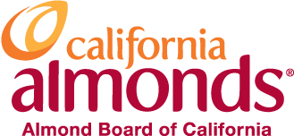

Paid Social Media Marketing
Experience
-
Freelance Marketing Consultant at Thistle Farms (2022)
As a freelance marketing consultant, I built campaigns for the CEO and founder (including landing pages, ads, and email flows). Through Meta Ads Manager, I created an audience and setup a 4 week paid social campaign to drive traffic to the website.
-
Paid Social Intern at Sterling Rice Group (2022)
Through my internship I help create a TikTok presence and Meta paid social efforts for Potatoes USA, plan/execute/report global campaigns for Almond Board of California , build and report on paid social efforts for Powell Gardens, and plan, build, and report on paid social campaigns for H+C Animal Health brands. I work on 8 clients with national/global initiatives, bringing their social presence to life across all major social platforms

